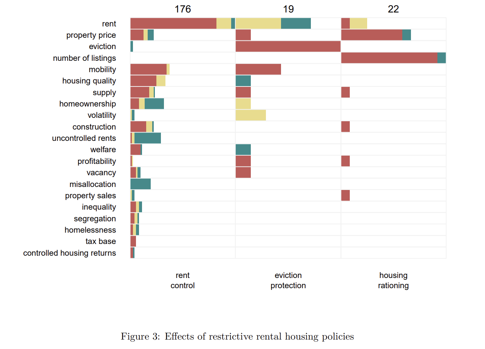
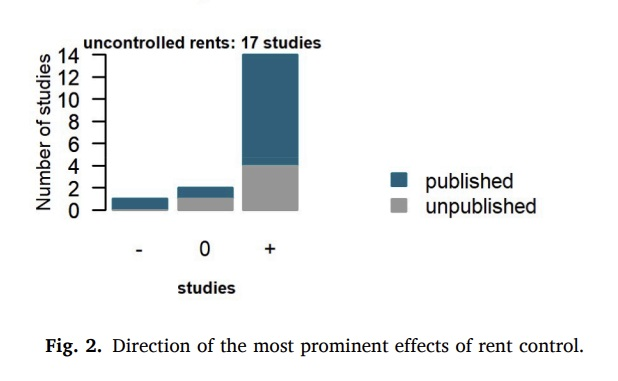
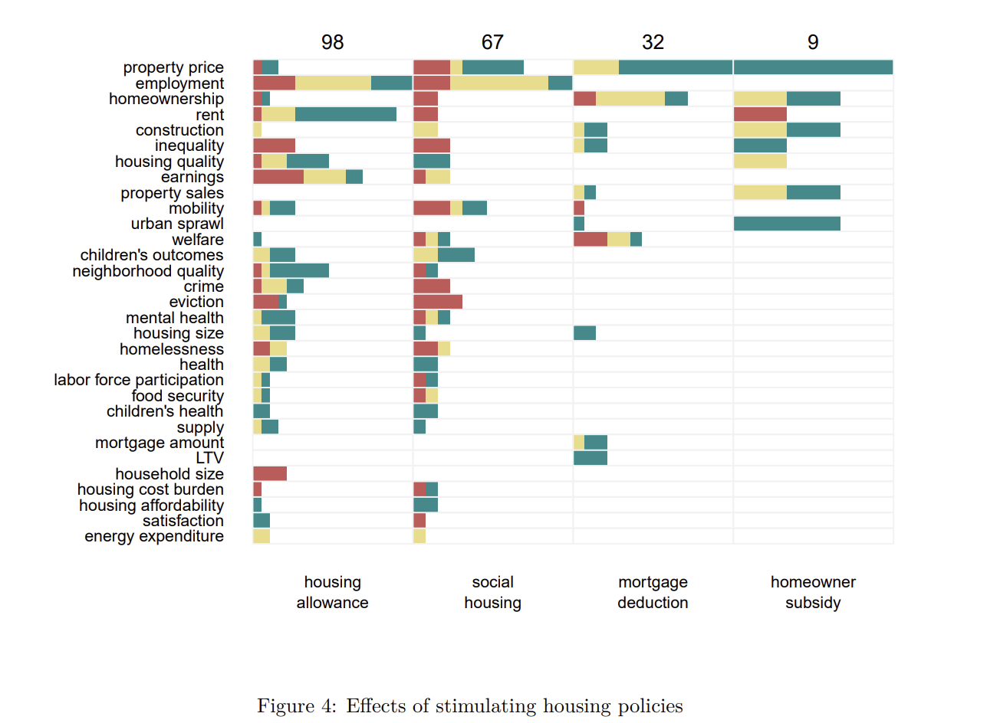
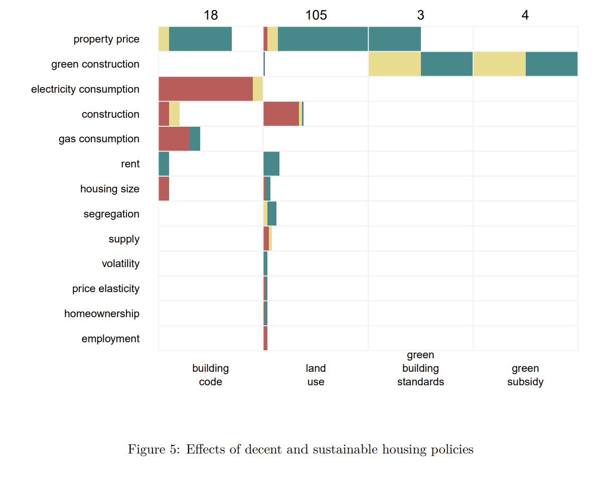
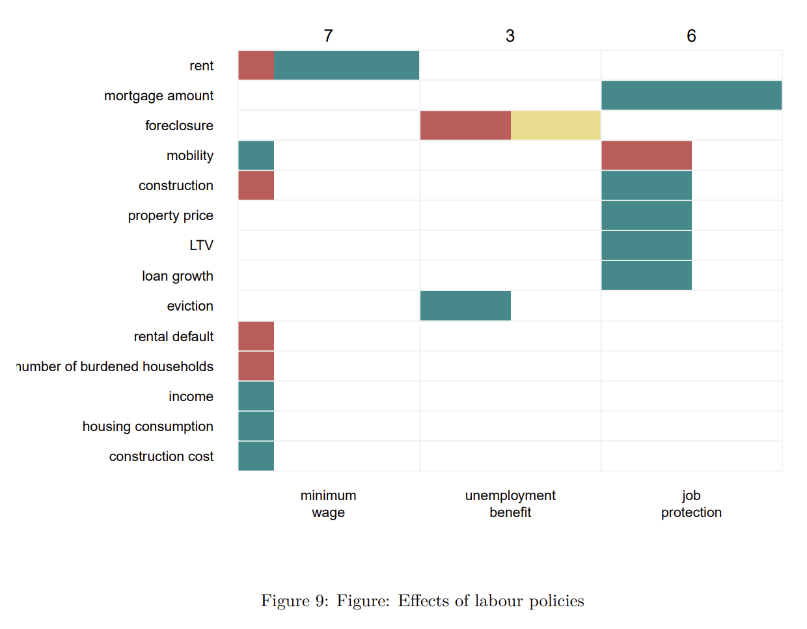

my housing policy platform.
tldr: i support upzoning (and zoning reform generally, i would like a japanese style, state controlled zoning system with Nuisance restrictions), public rent insurance, borrower based macroprudential limits, foreign-buyer taxes, mandatory savings programs, abolishing parking minimums and min. lot sizes, By-Right approval systems, construction visas, credential recognition reform (i want more pacts, however I actually dont like occup. licensing generally), dismantle the elevator union- ban proprietary maintenance contracts, adopt/harmonize/integrate somehow ISO/European standards not just ASME for elevators, plumbing, electrical etc, capital gains reform on primary residences (replace sec 121 flat exemption with inflation-indexed basis, tax real gains as normal capital gains, allow tax-free rollover into mandatory savings/401k to decouple retirement from asset appreciation and stop ‘homevoter’ incentives) i am against mortgage interest deductions, simple rent control, transaction taxes, homeownership subsidies, tariffs on construction materials, double loaded corridor requirement (legalize point access blocks (single stair buildings) up to 6–8 stories), nepa shit (exempt infill housing from environmental review) i am hesitantly supporting (if feasible) vacancy taxes in some way that would discourage speculative vacancy, some sort of singaporean style government housing for richer people with 99 yr lease in big cities, some sort of finland style of house first- fix you later? not sure how it would work in the usa., would need to see more data, but open to banning (or heavily restricting/regulating) institutional investors from buying starter homes (obv, keep Build-to-Rent regardless), lvt (obviously) but not sure if feasible- maybe enforce that gov. must tax land at a higher rate than improvements and repeal acquisition-value based property tax assessments, or do a Split-Rate Tax??
The Bundle of Goods
Housing is unlike any other consumer good. It is not just a physical structure; it is a “bundle” of services that determines a household’s access to education, health, and employment.
(schwartz_2021?) identifies three primary goals of U.S. housing policy:
Shelter Quality: Ensuring housing is physically safe and sanitary.
Affordability: Ensuring households do not spend excessive income on rent/mortgage.
Neighborhood Quality: Ensuring access to opportunity and freedom from environmental hazards.
Almost every policy failure in housing stems from a single contradiction: housing is both a social necessity (shelter) and a financial vehicle (wealth). Policies that boost the “wealth” aspect (rising prices) inevitably harm the “shelter” aspect (affordability).
The Fundamental Tension: Tenure The US housing system is defined by its “tenure” divide—the legal status of ownership versus renting.
Homeowners (approx. 66%): Heavily subsidized through the tax code (Wealth building).
Renters (approx. 34%): Lower average incomes, subsidized primarily through limited safety nets (Shelter).
Because federal policy heavily incentivizes ownership as the primary vehicle for middle-class wealth accumulation, it often conflicts with the goal of affordability. When housing values rise, owners win (wealth effect) but renters lose (affordability crisis).
“Housing occupies a particular role in economic policy because it represents both a store of wealth for the owner and a social good that is necessary for the well-being of a community… The policy dilemma faced by governments is how to support the supply of housing as an essential service without disrupting the efficient operation of the property market.”
(Hodgson, 2024)
The Financial Architecture
To understand modern housing policy, one must understand the financial plumbing that allows lenders to issue loans. The U.S. system is unique globally due to the heavy involvement of the federal government in the mortgage market.
The Secondary Mortgage Market
In the early 20th century, mortgages were short-term (5 years) and required 50% down payments. If the bank ran out of cash, lending stopped. The government intervened to create a “Secondary Market” to ensure credit always flows.
The Originator: A local bank gives a homebuyer a loan.
The Sale: The bank sells that loan to a Government-Sponsored Enterprise (GSE) like Fannie Mae or Freddie Mac.
The Resupply: The bank now has fresh cash to lend to a new homebuyer.
The Security: The GSE bundles thousands of these loans into a Mortgage-Backed Security (MBS) and sells them to investors worldwide.
Why this matters: This government-backed cycle creates the “30-year fixed-rate mortgage.” Without government guarantees (Fannie/Freddie), private banks would likely only offer adjustable-rate mortgages (ARMs) to protect themselves from inflation risk.
Restrictive Rental Housing Policies
 1
Rent Control
Regulations protecting tenants from rental increases, including rent freezes and caps on rent growth
The most prominent effects of rent control are decline of rents for controlled dwellings, reduced residential mobility, lower construction, lower quality of housing, higher rents for uncontrolled dwellings, and lower property prices.
(Kholodilin, 2025, p. 14)
Not all rent control is created equal: The Three Generations
To understand the economic impact of rent control, one must distinguish between the blunt instruments of the past and modern stabilization efforts. Economists generally classify these policies into three distinct generations:
- First Generation (“Hard Control”): Absolute rent freezes. Common during wartime, these are universally condemned by economists for destroying the quality and quantity of the housing stock.
- Second Generation (“Soft Control”): Rent stabilization that allows periodic increases (often linked to inflation) to cover maintenance costs (e.g., New York City).
- Third Generation (“Tenancy Control”): The most common modern form in Europe (e.g., Germany). Rents are market-rate for new tenants but capped for sitting tenants to prevent economic eviction.
[F]irst-generation rent controls… lead to a significant fall in real rents… [and] low-rent property in poor and deteriorating condition… [However], third-generation rent controls… [where] rent increases are controlled within a tenancy but unrestricted between tenancies… [aim to] smooth out rent changes for tenants, while maintaining a competitive long-term rate of return for landlords.
(Haffner & Hulse, 2024)
The “Insider-Outsider” Problem
While Third Generation controls avoid the worst supply shocks, they create a distinct labor market distortion known as the “Insider-Outsider” problem.
“Insiders” (current tenants protected by caps) gain stability and below-market rents. However, this comes at the direct expense of “Outsiders” (young families, immigrants, or workers moving for jobs), who face a shrinking pool of units and significantly higher prices in the unregulated sector.
[I]nsiders (current tenants) gain at the cost of outsiders (prospective tenants)… [T]he beneficiaries from… rent controls are longer term tenants… who tend to be older, while the potential costs are born by new households who have to access housing through the unregulated market.
(Haffner & Hulse, 2024)
The “Lock-In” Effect
This disparity creates a “lock-in” effect. Tenants become prisoners of their cheap leases, refusing to move even if their family outgrows the unit or a better job awaits in another city. This creates a housing mismatch: an elderly widow might stay in a large family apartment because it is cheap, while a young family is squeezed into a small unit.
The impact on residential mobility appears to be quite clear: nearly all studies indicate a negative effect… Reduced residential mobility translates to less adaptable responses to shifts in the labor market.
(Kholodilin, 2024, p. 5)
By reducing the turnover of rental stock, rent control creates queues that make renting unviable, inadvertently forcing households into the buyer market even if they would prefer to rent.
Rent controls… can create “lock-in” effects where renters remain in space that may exceed their needs, reducing the effective housing supply and creating queues that make renting a less viable alternative.
(Geng, 2018, p. 12)
Price ceilings act as quality ceilings
For First and Second Generation controls that do not allow sufficient increases, the most immediate effect is physical deterioration. When landlords cannot raise rents to cover rising maintenance costs, they simply stop fixing things.
The published studies are almost unanimous… rent control leads to a deterioration in the quality of those dwellings subject to regulations. The landlords, whose revenues are eroded by rent control, have reduced incentives to invest in maintenance and refurbishment, thus they let their properties wear out.
(Kholodilin, 2024, p. 6)
Spillover Effects: Hurting the uncontrolled sector
Contrary to the goal of affordability, rent control often raises prices for everyone else. By limiting supply and turnover, it puts upward pressure on the unregulated market. Studies show an average 4.8% rent increase for uncontrolled dwellings in cities with rent control regimes.
As a rule, rent control leads to higher rents for uncontrolled dwellings. The average effect of rent control on… uncontrolled rents is 4.8%.
(Kholodilin, 2024, p. 5)

Exempting new builds can save supply incentives
To prevent the construction industry from halting new projects, modern policies often exempt newly built properties. This allows “Second Generation” controls to protect existing tenants without discouraging future supply.
[M]ore recent rent control policies often exempt newly built properties from regulation in order to preserve developer incentives. This exemption appears to work: Mense et al. (2023) find no immediate decline in construction in Germany… In this sense, the design of modern policies—by excluding new construction—can encourage, rather than discourage, future investment.
(Segu & Jofre-Monseny, 2025, p. 16)
The Trade-off: Price vs. Security
Ultimately, the most successful modern policies frame the issue not as price control, but as “security of tenure.” Instead of capping rents at artificial levels, the law restricts evictions. This allows landlords to make a reasonable profit (encouraging supply) while preventing them from evicting tenants arbitrarily just to reset the rent.
[R]ent regulation in a broader sense includes… various types of regulation which prescribe tenancy conditions… such as rules on termination of tenancies. This is understandable from the point of view that rent control will not work, if there is no protection from eviction.
(Haffner & Hulse, 2024)
Protection of Tenants from Eviction
Rules making eviction more difficult, such as automatic contract prolongation or prohibiting lease breakage except for specific reasons
By far the largest group of studies of eviction protection finds eviction-reducing effect. However, the number of studies on protection of tenants from evictions is very small.
(Kholodilin, 2025, p. 14)
Housing Rationing
Measures to manipulate supply and demand during shortages, including anti-speculation laws, mobility restrictions, and bans on short-term rentals (e.g., Airbnb restrictions)
Likewise, the number of studies on housing rationing is small. They find a negative effect on property prices. Most of these studies refer to the recent policies prohibiting or restricting shortterm rentals on platforms like Airbnb, as authorities suspect that these remove dwellings from the long-term rental housing market.
Airbnb restrictions appear effective in markets where tourist rentals constitute a significant share of the housing stock as they divert housing stock from long-term residents, raising costs
In sum, the evidence suggests that policies restricting short-term rentals can be effective in curbing platform activity and alleviating price pressures, especially in markets where tourist rentals constitute a substantial share of the housing stock and where enforcement mechanisms are robust.
(Segu & Jofre-Monseny, 2025, p. 10)
Stimulating Housing Policies

Housing Allowances
State subsidies paid to low-income households or landlords to cover housing costs
The numbers of studies that find positive and negative effects [about housing allowances on employment] are comparable, while the largest group of studies did not find any statistically significant effects… The housing allowances appear to increase rents… The housing allowances also seem to not just improve neighbourhood and housing quality but also increase housing size. They positively contribute to the mental health. Housing benefits can also lead to smaller household sizes by allowing the women to leave their partners in case of conflicts, since they are become less financially dependent.
(Kholodilin, 2025, p. 15)
A major structural flaw in housing allowances is the “withdrawal rate.” Because these benefits are means-tested, the subsidy shrinks as the tenant earns more money. This effectively acts as a high marginal tax rate on low-income workers, punishing them for increasing their hours or finding better jobs.
With means-tested benefits, the marginal rate of benefit withdrawal can make a significant contribution to the overall marginal rate of tax low-income households face influencing their labour-leisure… and savings decisions.
(Stephens & Gibb, 2024)
A major criticism of rental subsidies is that landlords simply raise rents to absorb the government cash (capitalization), however, some evidence suggests that if the policy is designed correctly,(specifically, if it targets only the most vulnerable rather than a broad swath of the population) inflationary effects are minimized.
[T]he third mechanism-relating capitalization to the proportion of tenants eligible for subsidies-has a clear policy implication: extending subsidies to higher-income groups increases policy costs and reduces effectiveness. Therefore, to be effective, rental assistance should be targeted toward the most vulnerable households.
(Segu & Jofre-Monseny, 2025, p. 15)
Mortgage Interest Deduction
Tax policy allowing homeowners to deduct interest payments from taxable income to encourage homeownership
Although it appears to not affect homeownership, it does lead to rising prices… There are some studies showing an improvement in the housing size and construction, but there are also studies that show negative welfare effects. All in all, most empirical studies conclude that mortgage interest deduction fails to achieve its objective.
(Kholodilin, 2025, p. 16)
Furthermore, favoring housing investment via the tax code distorts the broader economy. By incentivizing over-investment in real estate, these policies divert capital away from more productive industries while encouraging households to take on dangerous levels of debt.
[F]avorable tax treatment on housing investment may crowd out capital from more productive use than housing and encourage excessive leverage… This tax relief tends to be capitalized into house prices, without necessarily expanding housing opportunities for households.
(Geng, 2018, p. 11)
By subsidizing borrowing costs, it increases demand. In markets where supply is tight (inelastic), this simply inflates prices rather than spurring construction.
Recent years have seen a growing body of literature that challenges the notion of the MID’s positive effect on homeownership rates… [In fact,] in land-constrained jurisdictions, the MID reduces homeownership. In highly constrained markets… the MID decreases homeownership due to the high level of MID capitalization into housing prices.
(Valentin, 2024, p. 12)
Tax deductions like the MID disproportionately benefit the wealthy. High-income households have larger mortgages (and thus more interest to deduct) and face higher marginal tax rates (making the deduction worth more). Furthermore, lower-income households often claim the “standard deduction” rather than itemizing, meaning they receive zero benefit from the policy while still paying higher prices caused by the market inflation it generates.
[T]he monetary benefits of housing deductions have been described as regressive in several studies… Fatica and Prammer (2018) confirm the regressivity… [finding] that the MID in Belgium reduces the cost of ownership by 1.14% for households in the lowest income quintile but by 5.83% for those in the highest.
(valentin_2023?)
If the MID is regressive, inflationary, and distorts the economy, why does it persist? The answer lies in the “short-run wealth shock.” Because the subsidy is already baked (capitalized) into current home prices, removing it would cause an immediate drop in property values. This would harm current middle-class homeowners, creating a massive political barrier to reform despite the long-term welfare gains.
Despite the economic arguments supporting their discontinuation… housing deductions’ detrimental effects on household wealth in the short-run pose significant obstacles… [N]o more than 40% of households would prefer to repeal the MID because of the negative shock on housing equity it would trigger.
(valentin_2023?)
The impact of the deduction depends entirely on “supply elasticity” (how easy it is to build). In markets with strict zoning, the tax break is fully absorbed by price increases. It effectively only boosts homeownership in areas where land use regulation is lax.
[C]apitalization of the interest and property tax deductions [depends on] the elasticity of housing supply… [O]nly in markets with lax land use regulation does the mortgage interest deduction (MID) have a positive impact on homeownership attainment… In tightly regulated markets, the MID reduces the likelihood of homeownership for all income groups except the lowest.
(Bourassa et al., 2015, p. 203)
To understand why the Mortgage Interest Deduction (MID) is considered a distortion, one must understand “Tax Neutrality.” In a neutral system, the tax code treats a homeowner exactly like a landlord renting to themselves.
If a landlord gets to deduct mortgage interest (business expense), they must also pay taxes on the rent they receive (business income). However, the owner-occupier gets to deduct the expense without paying tax on the benefit they receive (the value of living rent-free, known as “Imputed Rent”).
By allowing the deduction without taxing the imputed income, the tax code heavily subsidizes ownership over renting.
A neutral tax system would ensure that the owner would face a similar tax outcome regardless of how the property is used… Tax neutrality is achieved if an owner-occupier is taxed on an amount equivalent to the rent that an investor would have received [and both] claim the same tax concessions.
(Hodgson, 2024)
Currently, only a handful of countries (such as the Netherlands and Switzerland) attempt to balance this by taxing imputed rent, making their systems more neutral but politically unpopular.
Homeownership Subsidies
Direct subsidies or grants provided to facilitate homeownership
The two major effects of homeownership subsidies that are considered in the empirical literature are property prices and urban sprawl. Both seem to be increased by the subsidies
(Kholodilin, 2025, p. 16)
Beyond inflationary pressure, evidence suggests that these subsidies often fail to expand the total pool of homeowners. Instead, they simply encourage households to buy earlier than they otherwise would have (an intertemporal shift), effectively subsidizing people who were already on the path to ownership.
[C]ritics argue that the [First Home Owners Scheme] merely brought forward home purchase for those who ultimately would have entered ownership anyway. For example, Bourassa, Haurin & Hendershott (1994) estimated that… the FHOS reduced the purchasing age of young households by an average of two years.
(Atterhög & Song, 2009, p. 255)
Public Rent Insurance
Government-backed guarantees covering landlord losses in case of tenant non-payment
One barrier to housing for low-income workers is landlord risk aversion. Rather than subsidizing the rent itself, the government can insure the landlord against non-payment. Evidence from France’s “Visale” program suggests this acts as a powerful lubricant for access.
[B]eneficiaries are significantly more likely to access the rental market, as the program increases landlords’ willingness to rent to eligible tenants… [It also] enhances the residential mobility of low-income households, enabling them to move towards areas with greater employment opportunities.
(Segu & Jofre-Monseny, 2025, p. 8)
Housing Quality and Sustainability Policies

Building Codes
Regulations regarding structural safety, fire safety, sanitation, and energy efficiency
The two most prominent effects of building codes are increasing property prices and reducing electricity consumption. The price increases can be explained by two factors… stronger restrictions on building standards drive up construction costs [and second] higher quality [amenities are] eventually (albeit probably not completely) capitalized in the real estate prices.
(Kholodilin, 2025, p. 16)
Unlike zoning restrictions which often serve to protect aesthetics or property values, building codes present a distinct welfare trade-off. While they raise costs, the safety benefits may justify the expense in a way that supply restrictions do not.
While… regulations could still improve welfare, on net, if the utility that they provide outweighs the higher cost of housing. For example, some building codes may provide a net welfare gain, as they ensure the safety and soundness of structures.
(Molloy, 2020, p. 12)
While ownership is often framed as a wealth-building tool, low-income households typically enter the market through “filtering”—buying older, depreciated housing stock. This creates a regressive maintenance burden: the poorest homeowners often live in the worst conditions yet must spend a higher percentage of their income on repairs than wealthier owners.
[H]ouseholds in the lowest income quintile are three times more likely to live in housing in need of modernization… Although their dwellings often are in worse shape, low-income groups still spend a larger proportion of their income on maintenance than wealthier households.
(atterhog_2009?)
When evaluating the cost-benefit analysis of retrofitting older homes, counting only “energy savings” often results in a weak financial case. However, when the “co-benefits” of health are monetized—specifically reductions in asthma, respiratory disease, and excess winter deaths—the return on investment becomes highly positive.
[A lack of insulation or ventilation] is linked to chronic respiratory diseases… [Studies find] that total benefits in “present value”… are one and a half to two times the magnitude of the cost of retrofitting insulation… [due to] reduced number of visits to doctors, cases of hospitalisations, [and] days off school.
(Nanda, 2024)
Land Use Regulations
Zoning laws, density restrictions, urban growth boundaries, and minimum lot sizes
Zoning does not restrict all housing equally; it disproportionately restricts the multifamily apartments that low-income renters rely on, biasing the market toward expensive single-family homes.
[M]ore regulated areas tend to have a larger share of single-family construction, suggesting that regulation restricts the supply of multifamily structures more than the supply of single-family structures… [This] prevents the construction of smaller homes that are more suitable to… migrants who would have otherwise moved into the area in response to the income shock.
(Molloy, 2020, p. 4)
Regulations are often pitched as a way to protect neighborhood character, and evidence suggests they succeed in creating amenities. However, this comes at the direct expense of supply, creating a “shortage by design” that inflates prices.
Land use policies increase property prices and diminish residential construction. On the one hand, by restricting construction they create a shortage of housing, thus, inflating prices. This means a worse affordability of housing. On the other hand, this effect results from the policies creating amenities and improving the neighbourhood quality.
(Kholodilin, 2025, p. 16)
Beyond just higher prices, strict zoning creates a structural financial vulnerability. In markets where supply is constrained (inelastic), prices cannot adjust gradually to economic shifts. Instead, they become hypersensitive to central bank policy, leading to sharper boom-and-bust cycles.
The regional heterogeneity can be partially explained by changes in housing supply, that is, where land is more expensive, house prices are generally more sensitive to changes in interest rates… The heterogeneity of policy response is significantly correlated with… housing supply elasticity.
(Zhao & Liu, 2023, p. 7)
The Asymmetry of Reform
Most importantly, longitudinal data reveals that zoning reforms are not symmetrical. While tightening restrictions (downzoning) has immediate negative impacts on the middle class, loosening them (upzoning) is a slower fix that filters down from the top.
Reforms that tighten restrictions have a direct, statistically significant negative impact on middle-income affordability:
Reforms that increase land-use restrictions and lower allowed densities are associated with increased median rents and a reduction in units affordable to middle-income renters.
(Stacy et al., 2023, p. 1)
Conversely, reforms that loosen restrictions (upzoning) do successfully add supply (0.8% increase), but this supply materializes slowly (3–9 years) and primarily at the upper end of the price spectrum.
We find that reforms that loosen restrictions are associated with a statistically significant 0.8% increase in housing supply within three to nine years… This increase occurs predominantly for units at the higher end of the rent price distribution.
(Stacy et al., 2023, p. 1)
The “Implementation Gap”: Why permissions don’t always equal homes
A common assumption in housing economics is that if you remove planning constraints, supply will instantly follow. However, critics argue that the “supply side” is often constrained by factors totally unrelated to zoning, such as skills shortages, material costs, or strategic behavior by developers (land banking).
This creates an “implementation gap” between the number of units permitted and the number actually built.
[T]he supply side… is under-specified… [T]here is a significant “implementation gap” between planning permission being secured and development taking place… [M]odels… [often] assume that planning permissions will be translated into new homes more quickly and at a higher rate than is likely to be possible or desirable from the builder’s perspective.
(O’Brien et al., 2024)
Consequently, while deregulation is a necessary condition for supply, it is not a sufficient one if the construction industry lacks the capacity to scale up.
Zoning Architectures: Conformative vs. Performative Not all zoning is created equal. The economic impact depends heavily on whether the system prioritizes “Certainty” or “Flexibility.”
Euclidean Zoning (The US Model) Named after the Supreme Court case Euclid v. Ambler, this system separates uses rigidly (e.g., residential vs. commercial). It provides high certainty (neighbors know exactly what can be built) but low flexibility, making it difficult to adapt land to changing economic needs.
The Japanese Model (Maximum Elasticity) Japan utilizes a zoning system that allows a high mix of uses and densities by default. It offers both flexibility and the “right to build” (certainty). While this results in a “disordered” urban form, it creates a highly elastic housing supply that keeps prices stable during booms.
The German Model (Negotiated Flexibility) Germany uses a “performative” approach. Plans offer flexibility regarding density and mix (allowing adaptation), but developers face uncertainty regarding the final form, which is often negotiated with the local authority.
In the USA, zoning is typically inflexible with regard to land use… but provides a high degree of certainty… In Germany… zonal plans tend to offer flexibility to develop at higher densities… but developers face significant uncertainty for the final form… [In Japan], zonal plans offer flexibility regarding mix… but confer the right to develop… [offering] benefits with respect to ease of development.
(O’Brien et al., 2024)
Regulations distort demographics by forcing lower-income households to leave
Standard affordability metrics often understate the crisis in highly regulated cities. This is because high costs cause “sorting”—lower-income households simply move away (or never move in). By expelling the poor, regulated cities effectively export their poverty statistics to other regions.
[A] regulation that raises housing costs may cause fewer poor households to move in and more poor households to move out. Thus, the regulation can alter the local distribution of income… household sorting can affect traditional measures of housing affordability.
(Molloy, 2020, pp. 8–9)
The “Green” Zoning Paradox
Local zoning is often defended on environmental grounds (preserving open space or limiting “overcrowding”). However, when productive, temperate coastal cities restrict growth, they force migration to less temperate, car-dependent regions. This results in a net increase in total carbon emissions.
[R]estricting… housing… in coastal cities may force people to move to more affordable, less constrained but higher carbon footprint areas. Such dynamics may lead to an adverse and unintended consequence of local land-use policy… [inadvertently] adding to the risks of climate change.
(Nanda, 2024)
Strict density controls often force development to the periphery. While the housing itself might appear cheaper, the total cost of living remains high once commuting is factored in.
If regulation pushes construction to areas that are farther from jobs, the total cost of living for the typical household will be higher because they face higher commuting costs… density controls and height restrictions tend to increase urban sprawl.
(Molloy, 2020, p. 10)
The “Streetlight Effect” in Housing Economics
Finally, there is a methodological bias in how we evaluate planning. It is easy to measure the costs of regulation (higher house prices), but very difficult to measure the benefits (the absence of noise pollution, the value of coordinated infrastructure, or heritage preservation).
Because costs are quantitative and benefits are qualitative, economic models often overstate the net harm of regulation. They act as “a series of facts looking for a theory,” focusing on price inflation while ignoring the market failures (externalities) that zoning was invented to solve.
[N]o-one would be, or should be, surprised that regulations raise house prices… what is at issue is how much they raise prices, compared with what benefits they confer… [Economists must] seek to apply the same degree of rigour… to the measurement of costs [as to benefits].
(O’Brien et al., 2024)
Consumer preference sometimes contradicts New Urbanist planning goals
While planners often advocate for high-density and connected street grids to reduce sprawl, a meta-analysis of 139 analyses shows that the market often penalizes these features. Consumers frequently pay a premium for lower density and disconnected streets (cul-de-sacs).
[A] high density… is likely to decrease individual housing prices… The calculated mean coefficient was statistically significant by the effect size (\(r\)) of .04 [indicating a negative relationship]… Having a cul-de-sac in a neighborhood has been shown to have a positive effect on housing premiums… (\(r = .05\))… [whereas] street density… was negatively related to housing values (\(r = -.02\)).
(Park et al., 2016, pp. 3, 6, 7)
This creates a tension where zoning for density may lower per-unit housing costs not just by increasing supply, but because buyers simply prefer lower-density environments.
[P]eople are less likely to invest in houses in higher density neighborhoods… high density can be perceived as a crowded environment and prone to causing stress… [P]eople still value large lots, lower density… and secluded space with less connected streets over most New Urbanism principles.
(Park et al., 2016, pp. 7, 9)
Proximity to institutional land uses (like schools or government buildings) tends to increase housing values, while proximity to industrial uses decreases them. However, generic “mixed-use” zoning does not automatically generate value.
Being closer to institutional land uses increases housing premiums… [However] a large distribution of industrial land uses has negative effects… The larger the industrial land use, the lower the housing values (\(r = -.09\))… Commercial land use showed insignificant effects (\(r = .00\)).
(Park et al., 2016, pp. 5, 7)
While urbanists often promote mixed-use developments as a way to increase value and walkability, the actual market data is highly conflicted. The “premium” depends entirely on the specific type of non-residential use.
Mixed land use was reported as both a positive and a negative condition… Being closer to institutional land uses [like schools] increases housing premiums… [while] a large distribution of industrial land uses has negative effects… Commercial land use showed insignificant effects (\(r = .00\)).
(Park et al., 2016, pp. 3, 5, 7)
Green Subsidies and Green Building Standards
Policies promoting energy-saving measures, such as insulation or solar battery installation
There are still relatively few studies on the effects of green housing policies. The effects found in this literature are rather ambiguous.
(Kholodilin, 2025, p. 16)
While the effect of direct subsidies can be mixed, evidence suggests that informational policies—specifically Energy Performance Certificates (EPCs) and “Energy Star” labels—successfully capitalize energy savings into asset prices.
Eichholtz et al. find that for 2004–2007 US buildings with an Energy Star label rent for approximately 3% more per square foot than comparable buildings that lack the label. And… homes in the Netherlands with a green EPC label (levels A-C) sell at a 3.6% premium relative to comparable properties with a non-green label.
(Broxterman & Zhou, 2023, p. 24)
A major barrier to sustainability in the rental sector is the “split incentive” (or principal-agent problem). If the tenant pays the utility bills, the landlord has zero financial incentive to install efficient windows or insulation. Conversely, because tenants move frequently, they have no incentive to invest in capital improvements for a property they do not own.
[I]f the renter pays the utility bills, then the landlord has little incentive to invest in energy-efficient measures… [and] since renters do not tend to have long-term motivations… they are unlikely to upgrade… [This leads to] poor housing conditions and [renters] face prohibitive resource constraints.
(Nanda, 2024)
Transit-Oriented Development
Development that maximizes the amount of residential, business and leisure space within walking distance of public transport
Unlike density or street connectivity, proximity to public transit is a “New Urbanist” feature that the market consistently values positively, particularly within a quarter-mile radius.
[B]eing located close to transit stops is a positive condition that increases housing values in general, but it becomes more effective when a property is located within a quarter-mile radius… properties within a quarter-mile distance… were likely to have a higher housing value (\(r = .03\)) than beyond this distance, while a half-mile (\(r = .01\)) was not a significant condition.
(Park et al., 2016, p. 7)
Mandatory Property Disclosure
Laws requiring sellers to affirmatively disclose material defects (e.g., flood risk, lead paint) rather than relying on the buyer to discover them (“Caveat Emptor”)
Shifting the legal burden of information from buyer to seller reduces the “lemon” problem (where bad houses drive out good ones). When laws mandate full disclosure, buyers face less risk and are willing to pay more for housing.
[D]isclosure laws reduce asymmetric information… [A]verage sale prices in covered metro areas increase by 3-4% over a 4-year period following adoption, consistent with a 6% reduction in the risk premium for owner-occupied housing.
(broxterman_2022?)
Furthermore, specific hazard disclosures (like flood zones) help markets price risk accurately, though often at a penalty to the specific properties located in danger zones.
[F]ollowing the passage of a 1998 natural hazard disclosure law… California homes located in a flood zone sell at a 4.2% discount relative to comparable non-flood zone properties… and no discount [was observed] before the law.
(broxterman_2022?)
Taxation of Real Estate

Transaction Taxes
Taxes paid upon the transfer of property title, such as stamp duties
The welfare costs of introducing or eliminating a housing transaction tax are small… While property taxes simply extract wealth from the original homeowner, transaction taxes can have more subtle, potentially positive effects. (Zhao & Liu, 2023, pp. 6–7)
While some argue transaction taxes curb speculation, other scholars argue they gum up the gears of the labor market. By making it expensive to move, these taxes discourage people from relocating for better jobs (“labor mobility”) and discourage the elderly from selling large family homes they no longer need (“allocative inefficiency”).
[T]axes imposed at the point of sale reduce labour mobility because they reduce incentives to pursue employment opportunities elsewhere… [and] inhibit housing adjustment moves as people continue to live in accommodation that is no longer appropriate to their needs.
(Hodgson, 2024)
This creates a “lock-in” effect where housing stock is utilized inefficiently—empty nesters stay in four-bedroom homes to avoid the tax, while young families are forced to the periphery.
Property Tax
Recurrent annual tax levied on the owner of real estate
On one hand, taxing property serves as a disincentive for developers, creating a drag on new supply.
[P]roperty tax seems to reduce [residential construction]
(Kholodilin, 2025, p. 16)
However, other literature suggests that without this tax, markets become prone to bubbles. The tax acts as a necessary friction against hoarding and speculation, even if it slightly dampens construction.
Property taxes are considered to simply extract wealth from the original homeowner… [However], residential property taxes or higher interest rates effectively dampen speculative housing transactions, having a long-term effect on the taming of house prices.
(Zhao & Liu, 2023, p. 8)
Unlike other interventions, taxes can actually work to stabilize prices, but they cannot replace supply-side fixes.
To curb soaring house prices, at least in the short term, property taxes should not be used to replace purchase restrictions… housing prices do not respond to large cuts in state property taxes.
(Zhao & Liu, 2023, p. 7)
Improvement Fees (Impact Fees)
Fees levied on developers or property owners to fund public infrastructure projects associated with new developments
[I]mprovement fees [have] effect[s that are predominantly] positive, because the fee revenues are invested in infrastructure improvements that increase housing prices
(Kholodilin, 2025, p. 16)
Vacancy Tax
Taxes imposed on empty properties to encourage owners to activate unused housing stock by selling or renting it out
In case of vacancy taxes, the evidence is rather mixed [regarding housing prices]… vacancy… taxes appear to increase [residential construction]
(Kholodilin, 2025, p. 16)
One reason for mixed effects may be because of the difference in how taxes affect speculative vacancy (withholding a unit from the market) and frictional vacancy (the time it takes to find a new tenant).
[V]acant homes taxes can be effective in reducing speculative vacancy, reintroducing units into both the rental and sales markets… [In France] the tax reduced the vacancy rate by around 13%… [In Vancouver] the policy was successful at reintroducing dormant housing units into active use.
(Segu & Jofre-Monseny, 2025, pp. 7–8)
Foreign-Buyer Tax
Targeted transfer taxes on non-resident purchasers intended to discourage foreign speculative demand
[F]oreign-buyer taxes appear to increase [residential construction]
(Kholodilin, 2025, p. 16)
Evidence suggests non-locals operate at a significant information disadvantage and consistently overpay compared to locals
[F]oreign buyers pay 3.6% more than domestic investors, on average… The premium reflects information disadvantages of foreign buyers… [Other studies find] nonloca l buyers paid an average premium of 4–15%… [and] nonlocal investors sell at a 7% discount in addition to paying a 13.8% premium at purchase.
(broxterman_2022?)
Macroprudential Regulations

Borrower-Targeted Policies
Policies aimed at borrowers’ leverage and financial positions, including caps on debt-to-income (DTI) ratios, loan-to-value (LTV) ratios, and amortization requirements2
Borrower-targeted macroprudential regulations like LTV (Loan-to-Value) and DTI (Debt-to-Income) limits are effective for stability, and are among the only policies that work in both the short and long term.
Macro-prudential policies can effectively restrain house prices and household credit growth in both the short and long terms… Borrower-based regulatory policies, such as reducing LTV or DTI limits, can effectively curb housing booms.
(Zhao & Liu, 2023, p. 7)
By restricting the flow of credit rather than the price of the asset, these policies are effective at cooling demand without distorting the construction market as severely as price controls.
Changes in down-payment requirements effectively dampen house price cycles… Credit availability can be reduced and leveraged to ease the housing price cycle.
(Zhao & Liu, 2023, p. 7)
These restrictions are effective largely because they interrupt the “financial accelerator” mechanism. In a standard cycle, rising home prices allow borrowers to take on more debt (since their collateral is worth more). They then use this increased borrowing power to bid up prices further, creating a self-reinforcing loop.
By capping the Loan-to-Value (LTV) ratio, policymakers attempt to limit this feedback loop, preventing asset price inflation from automatically translating into higher leverage.
[M]uch of the existing research… documents a positive relationship between limits on LTV or debt-to-income (DTI) ratios… and house price dynamics. This link is found to be significant in both industrial and emerging market countries… [T]here is some evidence that they affect the financial accelerator mechanism, to the extent that they influence the procyclicality of debt capacity through a collateral constraint.
(Galati & Moessner, 2013, p. 860)
However, a strict LTV ratio is only as effective as the valuation method used to calculate it. If banks use the current market price to calculate LTV during a bubble, the borrower’s borrowing power still rises with the bubble, undermining the policy.
Evidence from Germany suggests a more robust approach: calculating LTV based on a conservative “mortgage lending value” rather than the volatile spot price. By ignoring temporary spikes in market value, this method effectively freezes the credit cycle, preventing the “wealth effect” of a bubble from fueling further borrowing.
[T]he real estate market in Germany remained stable because… bank loans were determined based on the minimum value of real estate instead of the market price; this prevented the periodicity of lending.>
(Zhao & Liu, 2023, p. 10)
A major barrier to ownership is the “down-payment constraint”—the need for accumulated wealth. While some markets (like the US) addressed this by lowering down-payment requirements (increasing risk), others (like Germany and France) utilize contractual savings schemes (e.g., Bausparkassen).
These programs require households to save a specific amount over several years before accessing a loan. This allows low-income households to “signal” their creditworthiness through discipline rather than existing wealth, allowing lenders to safely offer loans to those with lower incomes.
Households can signal low credit risks by participating in savings plans… [T]he Bausparkassen system with its requirement that potential borrowers must accumulate savings before being eligible for a loan might help lenders to separate good and bad credit risks… Having access to such information can improve home ownership opportunity for a marginal mortgage applicant since the lender might not otherwise know that he/she is a good mortgage prospect.
(atterhog_2009?)
While broad LTV caps stabilize the market, lowering down payment requirements is the single most effective tool for helping young households enter the market. The impact of these constraints is highly age-dependent.
[A] reduction of the required down payment would increase homeownership with the increases being greater for younger individuals… The implied impact of a decrease in the required down payment from 40% to 20% is an increase in the ownership rate of 20… percentage points for the [26 to 35] age group… [but for] the 46 to 55 age group [the effect is] effectively zero.
(Bourassa et al., 2015, p. 204)
Financial-Institutions-Targeted Policies
Policies aimed at financial institutions’ assets or liabilities to tackle systemic risk, such as capital buffers, leverage ratios, and liquidity requirements
Financial-institutions-targeted policies… exert negative impacts on prices and loans.
(Kholodilin, 2025, pp. 10, 19)
However, not all institutional regulations act solely as drags on the market. There is some evidence that “dynamic provisioning”, forcing banks to build up buffers during economic booms to draw down during busts, helps sever the link between lending cycles and bank failures.Evidence from Spain’s implementation suggests that while this tool creates a safety net, it does not necessarily choke off credit supply during the boom, effectively acting as a shield rather than a brake.
[D]ynamic provisioning might have enhanced the resilience of individual banks and the banking system as a whole, even though they appear to have had only a modest restraining effect on credit growth… [In the US context, estimates suggest that if] commercial banks… had followed the Spanish dynamic provisioning system… about half of these banks would not have needed TARP support.
(Galati & Moessner, 2013, p. 861)
Macroeconomic Policies

Fiscal Policy
Government use of spending and taxation to influence economic conditions and aggregate demand
When the government spends heavily, it competes for the same labor and materials as private developers (“crowding out”) and drives up interest rates. This makes it harder for the private sector to build housing.
Fiscal policy appears to positively affect property prices, while negatively affecting residential construction. The first effect can be explained by the inflationary impact of government expenditure, whereas the second effect is possibly related to the crowding out of the government consumption. An expansionary fiscal policy triggers increases in both prices and interest rates. Consequently, private investors face heightened costs, leading to a reduced willingness to build
(Kholodilin, 2025, p. 19)
Opposing literature argues that housing investment is not merely inflationary but acts as a high-powered economic multiplier. Because construction relies on domestic supply chains and labor, it generates significant tax revenue and employment that can offset the initial public cost.
[I]nvestment across housing tenures has varying impacts but, specifically, social housing investment can improve the lives of tenant households… [Estimates suggest that building 100,000 homes] would generate £1.1 billion in capital spend, £13.6 billion more in economic output, 430,000 FTEs [Full Time Equivalent jobs] and £432 million in extra local infrastructure investment.
(Gibb & Christie, 2024, p. 17)
Monetary Policy
Central bank actions managing interest rates and money supply to influence inflation and economic activity
Monetary policy presents a distinct trade-off between stimulating supply and inflating prices. On one hand, lower interest rates reduce the cost of capital, which successfully encourages developers to build more homes.
Monetary policy… increases housing rents and purchase prices while fostering growth in the housing construction sector… The boost in housing construction can be explained by the lower interest rates, which alleviate the interest burden and decrease the opportunity costs for investors.
(Kholodilin, 2025, p. 19)
However, this liquidity often flows into speculation rather than productive output. While construction may rise, the “cheap money” simultaneously inflates asset prices, often cancelling out affordability gains and creating instability.
The impact of money supply expansion has stimulated the property sector, but only in the short-term, with little impact on prices… Loose monetary conditions can lead to a surge in real estate lending and a housing price bubble.
(Zhao & Liu, 2023, p. 6)
Ultimately, while useful for short-term stimulation, relying on monetary policy risks decoupling housing prices from economic fundamentals.
An expansionary monetary policy tends to accelerate subsequent house price rises, while a restrictive monetary policy tends to slow down subsequent house price rises… There is a significant correlation between monetary policy and asset pricing bubbles.
(Zhao & Liu, 2023, p. 10)
Labour Market Policies

Minimum Wage
Labor market regulations setting the lowest legal remuneration employers can pay workers
According to the literature, the major effect of minimum wage regulation is its positive impact on housing rents.
(Kholodilin, 2025, p. 21)
Unemployment Benefits
State-provided financial aid to individuals who have lost their jobs to support income stability
Unemployment benefits are much less investigated. It is not clear whether unemployment benefits allow reducing the number of foreclosures, although it provides monetary aid to people in financial distress.
(Kholodilin, 2025, p. 21)
Job Protection
Regulations limiting the ability of employers to dismiss workers, aimed at increasing income security
Of the few studies conducted, most conclude that job protection leads to an increase in mortgage amounts. By preventing the layoffs of employees, this regulation supports the demand for housing and, hence, for mortgage loans.
(Kholodilin, 2025, p. 21)
References
Footnotes
This and the below figures like this show the overall effects and their direction of restrictive rental housing policies. The policy tools are split in several subgroups, showing each in a separate figure. Each row corresponds to an effect, while each column refers to a policy. Above each column, the number of studies that investigate effects of the corresponding policy is reported. Given that some studies consider effect of several policies (e.g., social housing and housing allowances), the sum of these numbers exceeds the total number of studies examined here. The length of each bar reflects the relative attention devoted by researchers to the corresponding pair policy-effect as measured by the number of studies that investigate it. For each policy tool, this number of studies is divided by the total number of studies inspecting this policy tool. The colour of bars shows the direction of the effect. Green (red) colour denotes studies that found statistically significant positive (negative) effects. Yellow colour denotes studies that did not find any statistically significant effect of the policy.↩︎
Debt-to-Income (DTI) measures the percentage of a borrower’s gross monthly income that goes toward paying debts.
Loan-to-Value (LTV) compares the mortgage loan amount to the appraised value of the property.
Lowering these limits (tighter policy) forces buyers to have higher incomes or larger down payments, which restricts credit and cools demand.
Raising these limits (looser policy) allows buyers to leverage more debt, increasing purchasing power but also the risk of default and asset bubbles.↩︎